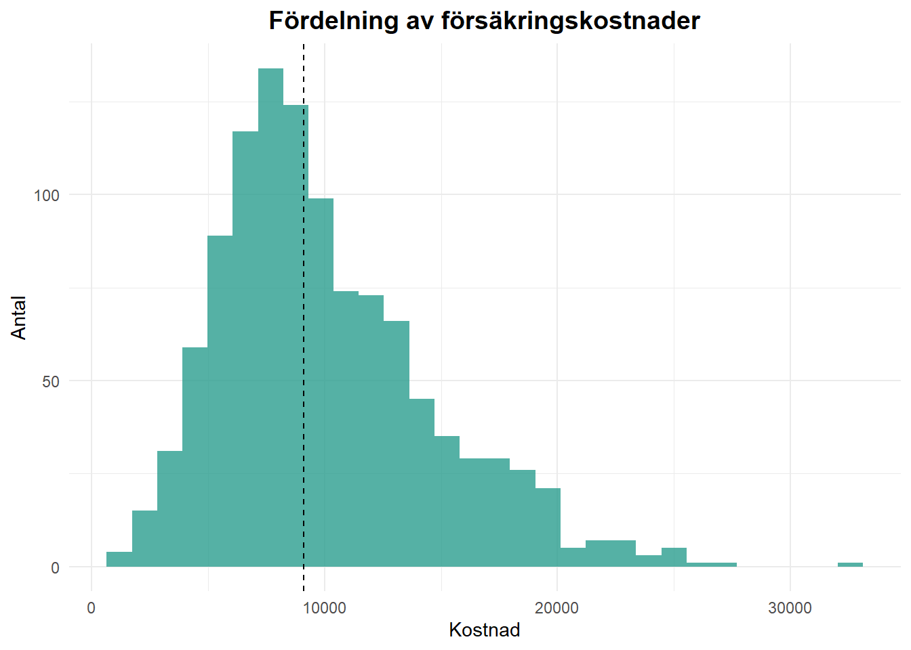
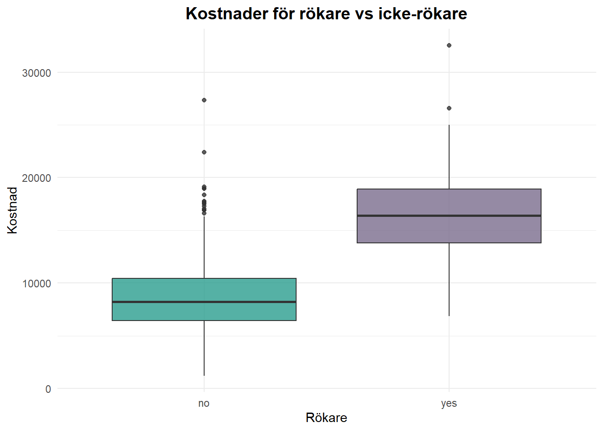
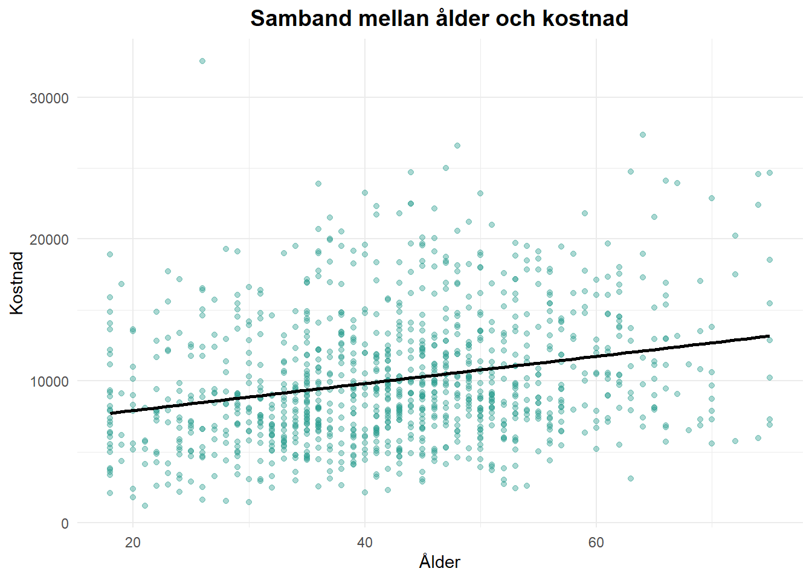
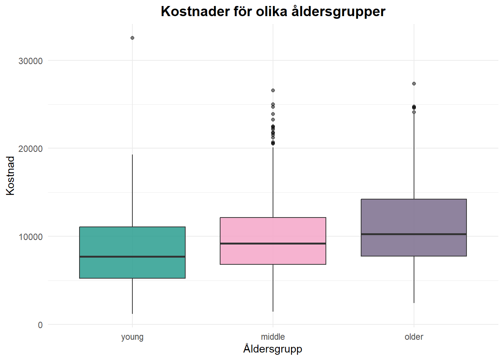
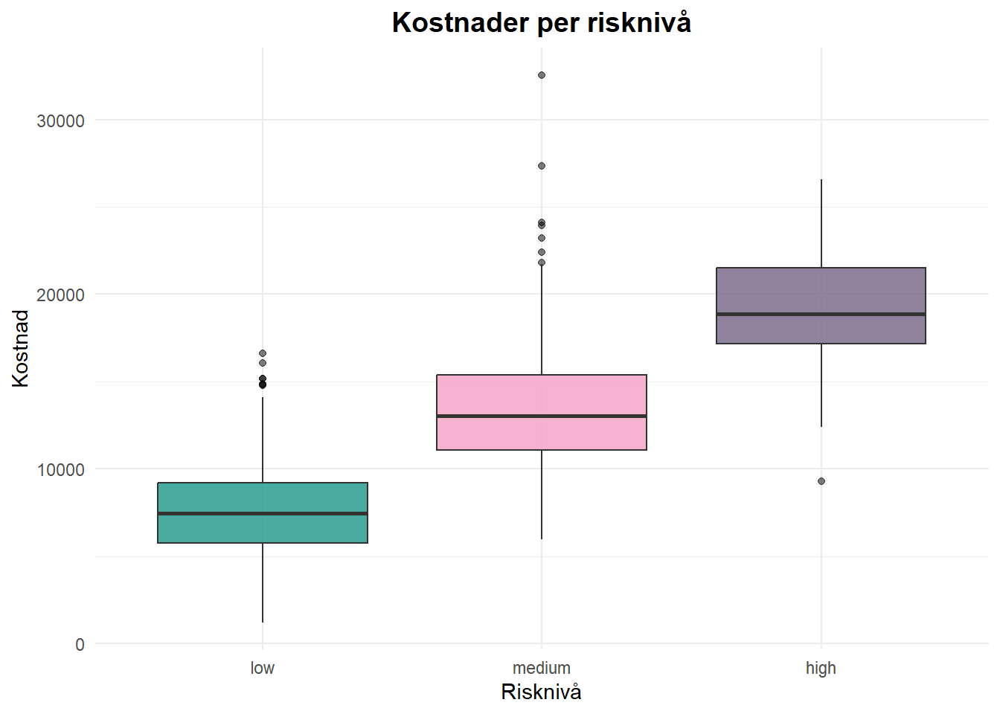
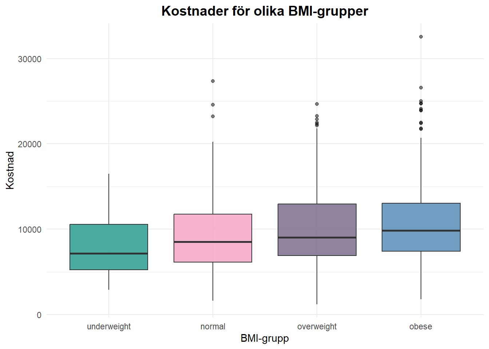
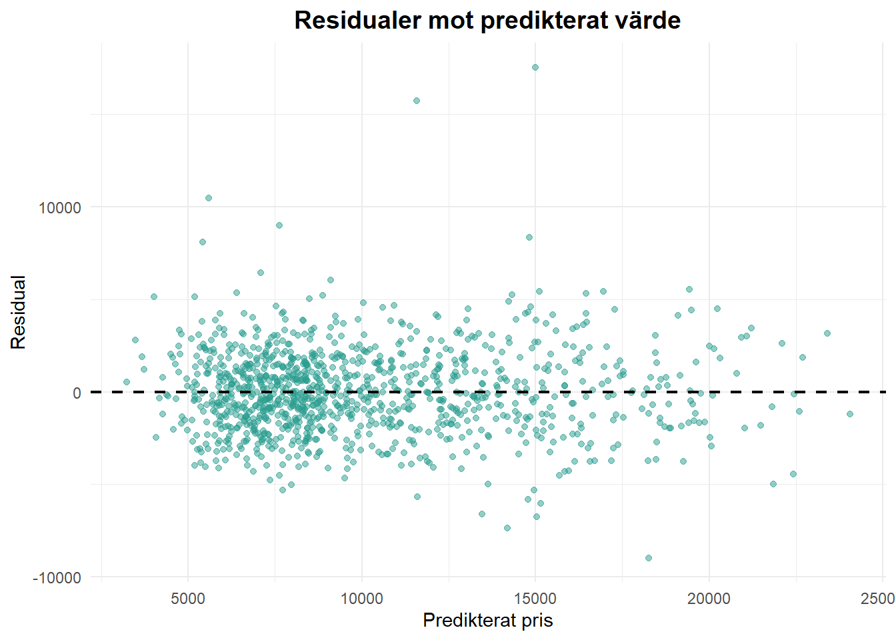
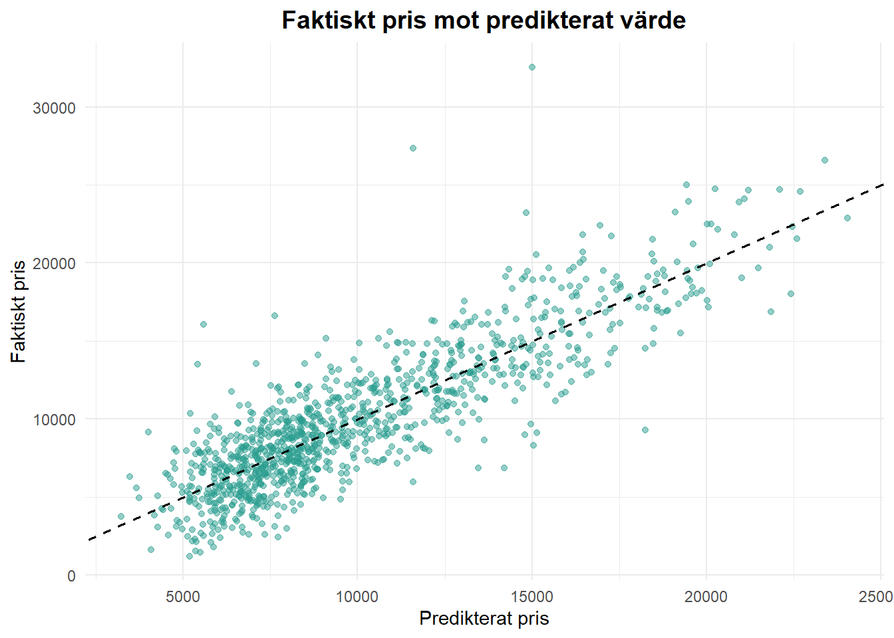
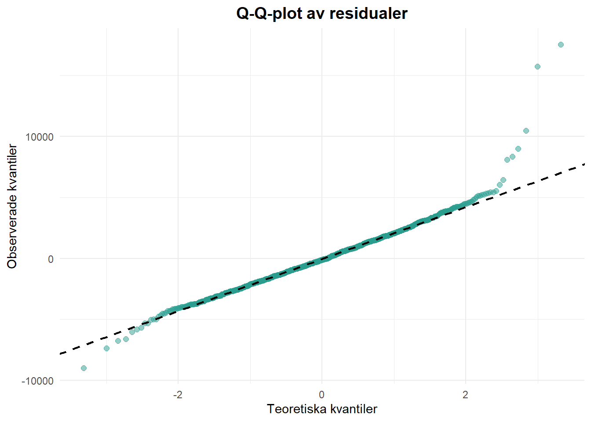

viz_charges
Syftet med analysen är att undersöka vilka faktorer som påverkar försäkringskostnader. Genom att kombinera explorativ dataanalys och regressionsmodeller identifieras samband mellan kunders egenskaper, livsstil och historik.
Målet är både att förstå vad som driver kostnader och att bygga en modell som kan användas för att förklara och uppskatta försäkringskostnader.
Datasetet innehåller både numeriska och kategoriska variabler kopplade till kunders hälsa, livsstil och försäkringshistorik. Som första steg gick jag igenom datats struktur och undersökte om det fanns saknade värden.
De kategoriska variablerna analyserades genom deras fördelningar för att identifiera eventuella snedfördelningar och inkonsekvenser, exempelvis olika stavningar av samma kategori.
För att få en mer enhetlig datamängd rensades textvariabler genom att ta bort extra mellanslag och omvandla all text till gemener. Därefter omvandlades relevanta variabler till faktorer, vilket är nödvändigt för regressionsanalysen.
Andelen saknade värden var låg (under cirka 3 %). Därför valde jag att ersätta dessa istället för att ta bort observationer. Numeriska variabler ersattes med medianvärden, eftersom medianen påverkas mindre av extremvärden. Saknade värden i kategoriska variabler ersattes med kategorin “unknown”. Det gör att datat kan behållas i analysen, även om det kan innebära en viss osäkerhet.
För att fånga mer komplexa samband skapades även nya variabler. BMI delades in i kategorier och ålder grupperades för att förenkla tolkningen. Jag skapade också en risknivå baserad på rökning och kronisk sjukdom, samt ett historikmått som kombinerar tidigare olyckor och claims.
Tanken med dessa variabler är att göra analysen mer överskådlig och samtidigt bättre fånga viktiga mönster i datat.
För att få en första överblick över sambanden mellan de numeriska variablerna tog jag fram en korrelationsmatris.
Resultaten visar att försäkringskostnader har ett positivt samband med framför allt ålder (≈ 0.26) och historikvariabler, inklusive den skapade variabeln history_score (≈ 0.27). BMI har ett svagare samband (≈ 0.15), medan övriga variabler ligger nära noll.
Sambanden är överlag svaga, vilket tyder på att kostnaderna inte drivs av en enskild numerisk faktor utan snarare av flera i kombination.
Eftersom analysen endast inkluderar numeriska variabler fångas inte viktiga kategoriska faktorer som rökning och hälsotillstånd. Dessa analyseras därför vidare med visualiseringar.
Jag har valt ett antal visualiseringar som tillsammans beskriver fördelningen av försäkringskostnader och hur dessa varierar mellan olika grupper.
Vissa variabler kompletteras med sammanfattande statistik för att möjliggöra mer direkta jämförelser mellan grupper.
viz_charges
(Den streckade linjen visar medianen för försäkringskostnaderna.)
Fördelningen är högerskev, med många låga kostnader och ett fåtal mycket höga observationer. Detta gör att extremvärden kan påverka analysen och modelleringen, vilket är viktigt att ta hänsyn till i den fortsatta analysen.
För att analysera skillnader mellan rökare och icke-rökare används både sammanfattande statistik och boxplot
smoker_summary# A tibble: 2 × 4
smoker avg_cost median_cost count
<fct> <dbl> <dbl> <int>
1 no 8586. 8232. 896
2 yes 16537. 16392. 204viz_smoker
Rökare har tydligt högre försäkringskostnader än icke-rökare, vilket framgår både i sammanfattande statistik och i boxploten. Gruppen rökare har både högre median och större spridning i kostnaderna.
Detta tyder på att rökning är en viktig riskfaktor som sannolikt har betydelse i den fortsatta regressionsanalysen.
För att undersöka sambandet mellan ålder och försäkringskostnad analyseras både ålder som kontinuerlig variabel och som grupperad variabel.
viz_age_scat`geom_smooth()` using formula = 'y ~ x'
Det finns ett positivt samband mellan ålder och försäkringskostnad, där kostnaderna i genomsnitt ökar med åldern. Samtidigt är variationen stor inom alla åldersnivåer, vilket tyder på att ålder inte ensamt förklarar kostnadsnivån.
viz_age_box
När ålder grupperas blir mönstret tydligare, där äldre kunder i genomsnitt har högre kostnader än yngre. Gruppindelningen gör sambandet mer överskådligt och enklare att tolka jämfört med den kontinuerliga variabeln.
För att analysera sambandet mellan risknivå och försäkringskostnad används både sammanfattande statistik och boxplot.
risk_summary# A tibble: 3 × 4
risk_level avg_cost median_cost count
<fct> <dbl> <dbl> <int>
1 low 7554. 7467. 687
2 medium 13398. 13022. 354
3 high 19224. 18883. 59viz_risk
Risknivån visar ett tydligt samband med försäkringskostnader, där högre risk är kopplad till högre kostnader. Skillnaden mellan grupperna är särskilt stor för den högsta risknivån.
Samtidigt är fördelningen ojämn, där gruppen med hög risk består av få observationer. Detta innebär att resultaten för denna grupp bör tolkas med viss försiktighet.
För att undersöka sambandet mellan BMI och försäkringskostnad analyseras BMI som kategoriserad variabel med hjälp av boxplot.
viz_bmi_box
Det finns ett positivt samband mellan BMI och försäkringskostnad, där kostnaderna i genomsnitt ökar med högre BMI-kategori. Skillnaderna mellan grupperna är dock relativt gradvisa snarare än tydligt separerade..
Den inledande analysen visar att försäkringskostnaderna varierar mycket mellan individer och är tydligt högerskev, där ett mindre antal kunder står för de högsta kostnaderna.
Skillnader mellan grupper är tydligast för rökning och risknivå, medan ålder och BMI visar mer gradvisa samband med kostnader.
Sammantaget indikerar analysen att kostnadsnivån påverkas av flera faktorer samtidigt, vilket motiverar en regressionsmodell med flera förklarande variabler.
För att analysera vilka faktorer som påverkar försäkringskostnaderna har jag byggt tre regressionsmodeller med olika detaljnivå.
Modell 1 är en enkel basmodell med ålder, BMI och rökning.
Modell 2 använder istället kategoriserade och aggregerade variabler som åldersgrupper, BMI-kategorier och en sammansatt risknivå, för att undersöka om mer tolkbara variabler kan fånga samma mönster.
Modell 3 bygger på de ursprungliga variablerna i mer detalj för att utvärdera om det ger bättre förklaringsgrad.
Modell 1 fungerar som en referensmodell för att jämföra hur förklaringsgraden förändras när mer aggregerade respektive mer detaljerade variabler inkluderas i modell 2 och 3.
model_comparison# A tibble: 3 × 4
model r_squared adjusted_r_squared residual
<chr> <dbl> <dbl> <dbl>
1 Model 1: Basnivå 0.544 0.542 3094.
2 Model 2: Kategoriserad & aggregerad 0.688 0.684 2570.
3 Model 3: Rådata (full modell) 0.746 0.744 2315.Resultaten visar en tydlig förbättring mellan modellerna, vilket är i linje med mönstren från EDA där flera variabler samverkar i att påverka kostnader.
Modell 1 förklarar cirka 54 % av variationen i kostnader
Modell 2 ökar detta till cirka 69 %
Modell 3 når ca 75 % och lägst residualspridning
Det innebär att de konstruerade variablerna i modell 2 bidrar med relevant information, men att viss detalj går förlorad jämfört med modell 3.
Modell 3 bedöms därför som mest lämplig, eftersom den både har högst förklaringsgrad och lägst residualspridning, vilket tyder på en bättre anpassning till datat
För att utvärdera modellen använder jag tre diagnostiska plottar.
model3_residual_plot
model3_actual_vs_fitted_plot
model3_qq_plot
Residualerna är i stort sett jämnt fördelade kring noll, vilket tyder på att modellen fångar de huvudsakliga sambanden i datat. Samtidigt syns något större spridning vid högre predikterade värden, vilket indikerar ökad osäkerhet för dyrare observationer.
Det finns ett tydligt linjärt samband mellan predikterade och faktiska värden, och de flesta punkter ligger nära referenslinjen.
Sammantaget fungerar modellen bra i det normala kostnadsspannet, men är mindre stabil för de högsta värdena.
QQ-plottet visar att residualerna följer normalfördelningen relativt väl i mitten av fördelningen, vilket tyder på att modellen fångar huvuddelen av datat.
Samtidigt avviker punkterna tydligt i den övre svansen, där de böjer uppåt. Det visar att modellen inte fullt ut fångar de högsta kostnaderna och tenderar att underskatta vissa extrema värden.
Detta är i linje med EDA, där kostnaderna var tydligt högerskev med ett fåtal mycket höga observationer.
Detta innebär att modellen är mindre tillförlitlig för att prediktera mycket höga kostnader och därför främst bör användas för att beskriva och uppskatta kostnader inom det mer normala intervallet.
Även om modell 3 presterar bäst när det gäller förklaringsgrad, fyller modell 2 en viktig funktion i analysen.
Modell 2 visar tydligt hur grupper skiljer sig åt, där exempelvis hög risknivå är kopplad till kraftigt ökade kostnader (över 11 000 högre än låg risk), och där äldre åldersgrupper har högre kostnader än yngre. Även historikvariabeln har en tydlig positiv effekt, vilket bekräftar att tidigare skadehistorik är en viktig faktor.
Denna modell gör det lättare att tolka och kommunicera resultat, eftersom effekterna uttrycks som tydliga skillnader mellan grupper snarare än kontinuerliga förändringar.
Modell 3 bygger istället på mer detaljerade variabler och visar att flera faktorer har statistiskt signifikanta samband med kostnaderna.
Särskilt tydligt är effekten av rökning (cirka 7400 högre kostnad) och kronisk sjukdom (cirka 3800). Även tidigare olyckor och claims bidrar var för sig till ökade kostnader, vilket ger en mer nyanserad bild än den aggregerade historikvariabeln i modell 2.
Detta skapar en tydlig avvägning mellan precision och tolkningsbarhet. Modell 3 ger bäst prediktioner och en mer exakt beskrivning av sambanden, medan modell 2 ger en mer överskådlig och lätttolkad bild av hur olika riskgrupper skiljer sig åt.
Analysen visar att försäkringskostnader påverkas av flera faktorer i kombination. De tydligaste sambanden finns för rökning, kronisk sjukdom och tidigare skadehistorik, medan ålder och BMI har mer gradvisa effekter.
Resultaten från den explorativa analysen bekräftas i regressionsmodellerna, vilket stärker bilden av att både livsstil och hälsa har central betydelse för kostnaderna.
Modellen förklarar en stor del av variationen i datat, men har begränsad förmåga att fånga de högsta kostnaderna. Den är därför mest lämplig som ett generellt beslutsstöd snarare än för exakta prediktioner av extrema värden.
En begränsning är att analysen bygger på ett begränsat antal variabler. Det finns sannolikt fler faktorer som påverkar kostnaderna som inte fångas i modellen.
En möjlig förbättring hade varit att inkludera fler relevanta variabler samt att justera modellen för att bättre hantera de högsta kostnaderna. Ett större dataset hade också kunnat ge mer stabila och tillförlitliga skattningar.
Sammanfattningsvis ger analysen en tydlig bild av vilka faktorer som driver kostnader, men resultaten bör tolkas med viss försiktighet, särskilt för extrema värden.
Arbetet har fungerat bra när det gäller att strukturera analysen från datastädning till modellering och tolkning, vilket har gjort processen tydlig.
Den mest utmanande delen var att välja och konstruera relevanta variabler för regressionsmodellerna samt att balansera mellan tolkbarhet och prediktionsförmåga i modellvalet.
Betygsmotivering:
Jag har genomfört en fullständig analyskedja i R, inklusive datahantering, explorativ analys och regressionsmodellering med jämförelse av flera modellalternativ.
Jag har även genomfört modelldiagnostik med residualanalys och QQ-plots samt fört ett kritiskt resonemang kring modellernas styrkor och svagheter.
Därför bedömer jag att arbetet motsvarar betyget VG 😊